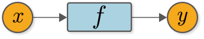

ステップ2 変数を生み出す関数¶
前ステップまでに実装したコード
[1]:
import numpy as np
class Variable:
def __init__(self, data):
self.data = data
前ステップで、Variableクラスは「箱」として使えるようになりました。しかし、今のままでは「ただの箱」です。その「ただの箱」を「魔法の箱」に変える仕掛けが必要になります。そのためのキーとなる存在が「関数」です。本ステップでは関数について考えます。
2.1 関数とは¶
関数とは何でしょうか。関数とは、少し硬い言い回しをすれば、「ある変数から別の変数への対応関係を定めたもの」と言えます。具体例として、2乗の計算を行う\(f(x) = x^2\)という関数を考えます。その場合、\(y = f(x)\)とすれば、変数\(y\)と\(x\)の関係が関数\(f\)によって決まります。つまり、「\(y\)は\(x\)の2乗である」という関係が、関数\(f\)によって決定します。
このように、変数間の対応関係を定める役割が関数にはあります。このとき、変数と関数の関係を視覚的に表すと図2-1のようになります。

図2-1 変数と関数の関係を表したグラフ
図2-1によって、変数\(x\)と\(y\)、そして関数\(f\)の関係性が可視化されました。このように、○と□で表したノードと矢印によって計算を表した図を「計算グラフ」と言います。なお本書では、変数をオレンジの○で、関数を水色の□で図示することにします。
WARNING
「グラフ」と言うと棒グラフや円グラフなどの図を思い浮かべるかもしれません。しかし、コンピュータサイエンスの分野では、「グラフ」とはノードとエッジで構成されるデータ構造（および、その構造を表した図）を指します。
2.2 Functionクラスの実装¶
それでは、図1-3で表される関数をプログラミングの視点で考えてみましょう。具体的に言うと、変数\(x\)と\(y\)を先ほど実装したVariableインスタンスだと仮定し、それらを処理できる関数\(f\)をFunctionクラスとして実装します。ここでの注意点は、次の2つです。
Functionクラスで実装するメソッドは、Variableインスタンスを入力とし、Variableインスタンスを出力とすることVariableインスタンスの実際のデータは、インスタンス変数のdataに存在すること
この2点に注意すると、Functionクラスは次のように実装できます。
[2]:
class Function:
def __call__(self, input):
x = input.data # データを取り出す
y = x ** 2 # 実際の計算
output = Variable(y) # Variableとして返す
return output
上のように、ここでは__call__メソッドを実装します。__call__メソッドは、引数としてinputを取りますが、これはVariableインスタンスが与えられることを想定します。そのため実際のデータは、input.dataに存在します。データを取り出した後は、目的とする計算――ここでは、2乗の計算――を行い、その結果をVariableの「箱」に入れて返します。
NOTE
callメソッドは、Pythonの特殊なメソッドです。このメソッドを定義すれば、f = Function()としたとき、f(…)と書くことでcallメソッドを呼び出せます。
2.3 Functionクラスを使う¶
それでは、Functionクラスを実際に使ってみましょう。ここでは、VariableインスタンスのxをFunctionインスタンスのfに入力してみます。
[3]:
x = Variable(np.array(10))
f = Function()
y = f(x)
print(type(y)) # type()を使って、オブジェクトの型を取得
print(y.data)
<class '__main__.Variable'>
100
上記のとおり、VariableとFunctionを連携して使うことができました。実行結果を見ると、yの型はVariableで、そのデータはy.dataに格納されていることが分かります。
さて、ここで実装したFunctionクラスですが、これは「入力された値を2乗する」という具体的な関数です。そのため、Squareというような具体的な名前の方が適切です。また今後、様々な関数（Sin関数やExp関数など）を追加することになります。その点を考慮すると、Functionクラスは基底クラスとして実装し、DeZeroのすべての関数に共通する機能を持たせた方が良いでしょう。そこで、次の2点を満たすようにDeZeroの関数を作り変えます。
Functionクラスは基底クラスとして、すべての関数に共通する機能を実装する具体的な関数は、
Functionクラスを継承したクラスで実装する
以上の点を考慮すると、Functionクラスは次のように実装できます。
[4]:
class Function:
def __call__(self, input):
x = input.data
y = self.forward(x) # 具体的な計算はforwardメソッドで行う
output = Variable(y)
return output
def forward(self, x):
raise NotImplementedError()
ここでは、__call__とforwardという2つのメソッドを実装します。__call__メソッドでは、「Variableからデータを取り出す」ことと「計算結果をVariableに詰める」という2つの作業を行います。そして、その間の具体的な計算は、forwardメソッドを呼ぶことで行います。そのforwardメソッドの実装は、継承先のクラスで行うことにします。
NOTE
Functionクラスのforwardメソッドでは、例外を発生させます。そうすることで、Functionクラスのforwardメソッドを使った人（使ってしまった人）に対して、そのメソッドは継承して実装すべきであることをアピールします。
それでは、このFunctionクラスを継承して、入力された値を2乗するクラスを実装してみます。ここでは、Squareというクラス名で次のように実装します。続いて、上のコードのxに新しいデータを代入してみます。それには、次のように書くことができます。
[5]:
class Square(Function):
def forward(self, x):
return x ** 2
SquareクラスはFunctionクラスを継承しているので、__call__メソッドはそのまま受け継がれます。そのため、具体的な計算をforwardメソッドに書くだけで、Squareクラスの実装は完成です。このSquareクラスを使えば、次のようにVariableを処理できます。
[6]:
x = Variable(np.array(10))
f = Square()
y = f(x)
print(type(y))
print(y.data)
<class '__main__.Variable'>
100
見てのとおり、前と同じ結果が得られました。以上で、ステップ2の作業は終了です。これで、VariableとFunctionクラスの基礎は完成です！
NOTE
これからしばらくの間、Functionの入力と出力は「1つの変数」に限定します。「ステップ11」から、複数の変数に対応できるようにDeZeroを拡張していきます。